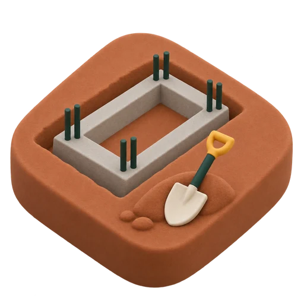
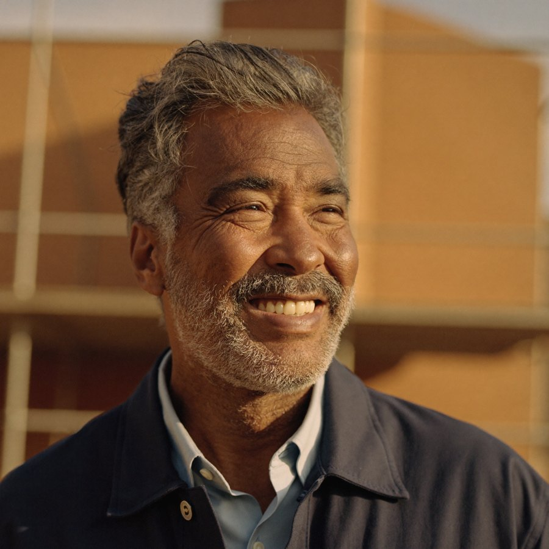
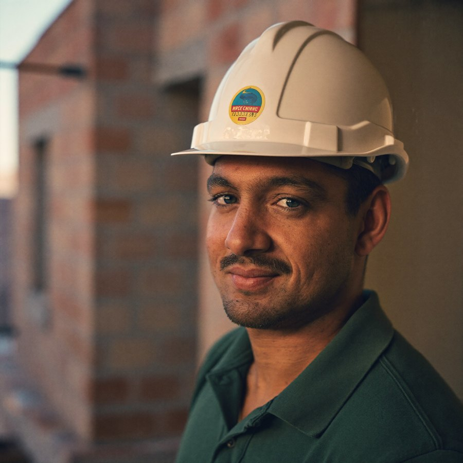
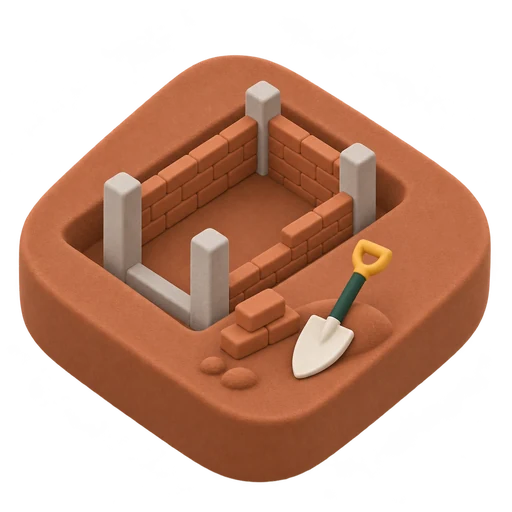
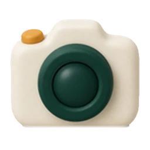
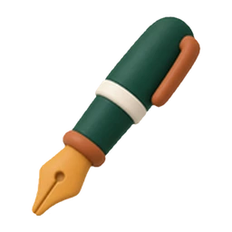
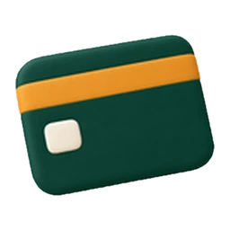

Cliente · villa à Nador
« Je vis à Lyon. Avant de payer une tranche, je vois les photos du jour et l'avis signé. Je ne paie plus à l'aveugle. »
Samira K.Fait construire à Nador, depuis Lyon
Suivi de chantier au Maroc
TEEQA est là pour vous.
Fondations, murs, toiture : à chaque étape, quelqu'un est sur place pour vous, et vous le voyez depuis la France.
Suivi de chantier au Maroc
Aux étapes que vous choisissez, un contrôleur indépendant se rend sur votre terrain, photographie l'avancement réel et signe son avis. Vous savez enfin, en clair, si vous pouvez payer.
TEEQA éclaire votre décision. Vous gardez la main sur votre argent.
Six étapes, une maison
Des fondations à la remise des clés, un chantier TEEQA avance en six étapes. Choisissez-en une : voici où en est la maison, et ce qui est vérifié sur place à ce moment-là.
Comment ça marche
Depuis Paris, Lyon, Bruxelles ou Montréal, elles suivent leur chantier à Nador, Agadir ou Fès, étape par étape.
Ils travaillent avec nous
Dynamic Island, écran verrouillé, widget
TEEQA affiche l'avancement du chantier sans ouvrir l'application : dans la Dynamic Island de l'iPhone, sur l'écran verrouillé et dans un widget de l'écran d'accueil. L'affichage ne bouge que lorsqu'une information change.
L'appli, écran par écran
Huit écrans, dans l'ordre où vous les vivrez. Ce sont les vrais écrans de l'application.
Cliente · villa à Nador
« Je vis à Lyon. Avant de payer une tranche, je vois les photos du jour et l'avis signé. Je ne paie plus à l'aveugle. »
Samira K.Fait construire à Nador, depuis Lyon

Entreprise de construction« Quand le contrôleur valide l'étape, le client le voit tout de suite. On discute moins, et le chantier avance. »
Youssef A.Gérant, entreprise de gros œuvre

Contrôleur indépendant
« Je passe sur place, je photographie, je signe. Mon avis reste lisible par quelqu'un qui n'est pas du métier. »
Hicham B.Contrôleur technique

Trois rôles, un seul chantier
Trois personnes suivent le même chantier dans TEEQA : le client qui fait construire, l'entreprise qui réalise les travaux, et le contrôleur qui vérifie sur place. Chacun a ses propres actions.
Un tiers de confiance
TEEQA ne détient aucun argent et ne tranche pas les litiges. Son rôle est de vous donner, à chaque étape, une preuve datée et un avis signé pour décider en connaissance de cause.
Questions fréquentes
TEEQA est une application de suivi de chantier au Maroc. Aux étapes que le client choisit de faire contrôler, un contrôleur indépendant se rend sur le terrain, prend des photos et signe un avis. Le client, souvent à l'étranger, sait alors s'il peut payer la tranche.
Non. TEEQA ne détient aucun argent. Le paiement se fait directement entre vous et l'entreprise, en dehors de l'application. TEEQA indique seulement « Paiement recommandé » ou « Paiement différé » ; vous confirmez ensuite « J'ai payé cette tranche ».
L'entreprise corrige le point signalé et envoie une photo de la correction dans l'application, sans attendre une nouvelle visite. Si l'avis est Refusé, l'étape est à reprendre et une nouvelle visite a lieu.
Non. TEEQA éclaire votre décision avec des photos datées et un avis signé, mais ne tranche pas les litiges. Tous les échanges restent consultables dans l'historique du chantier.
Oui. Une photo prise sans réseau est gardée sur le téléphone, puis envoyée automatiquement au retour de la connexion.
Seules les personnes invitées : vous, l'entreprise et le contrôleur. Un chantier n'est jamais publié. Le contrôleur accède au chantier par un lien que vous pouvez révoquer à tout moment.

L'entreprise déclare
À la fin d'une étape, l'entreprise que vous avez choisie déclare les travaux terminés dans l'application.

Un contrôleur passe sur place
Un contrôleur indépendant se rend sur le chantier, vérifie les travaux et prend des photos.

Vous voyez tout, en clair
Photos vérifiées, avis signé par le contrôleur, et une recommandation simple : paiement recommandé, ou paiement différé.

Vous décidez
Payer ou attendre : la décision vous appartient. Le paiement se fait directement entre vous et l'entreprise, hors de TEEQA.